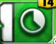
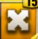
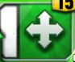

Плашки для Ultimate поясов
KO’s Fighting Spirit

При создании 6 или более недвижемых, увеличивает урон зелёных гемов на 150% и урон чёрных приёмов на 250% на 2 хода
Eyes of Judgment

При создании 6 или более , снижает заряд приёмамов противника на 6 единиц.
The Lion’s Gaze

При уничтожении 4 или более , снижает заряд каждого приёма опонента на 6 единиц.
Плашки для поясов начиная с Epic
The Gremlin’s Ears

При создании 3 и более  увеличивает урон твоих красных и синих гемов на 100% на 2 хода.
увеличивает урон твоих красных и синих гемов на 100% на 2 хода.
Hunter’s Medallion

Если разбитии 4 и более зелёных гемов увеличивается урон жёлтых гемов на 100 процентов на 2 хода
The Hitman’s Battle Armor

При создании 8 и более понижает заряд приёмов опонента на 4 единицы.
Bianca’s Braid Blade

При создании 6 или более , увеличивает урон наносимый всеми гемами на 100% на 2 хода.
The Dominator’s Drip

При активании приёма чёрного цвета, усиляется 7 случайных гемов в 7 раз.
Mella’s Mask

При создании 6 и более ,урон синих гемов увеличивается на 150%, а урон противника понижается на 25% на 3 хода.
The Bulldog’s Bracers

При создании 10 и более , увеличивает урон жёлтых гемов 25% и урон красных гемов на 75% на 3 хода.
The Princess’s Flaming Glove

При создании 6 и более , увеличивает урон синих гемов на 50% на 2 хода
The Main Face of Mick Foley

При разбитии 6 и более чёрных гемов создаёт 5 случайных усиленых гемов с силой 50 000
The Baddest Jacket

При создании 3 и более , увеличивает урон жёлтых и чёрных гемов на 100 процентов на 2 хода
La Familia

При разбитии 3 синих камней увеличивает заряд зелёных приёмов на 3
The Deadman’s Sigil

При разбитии 3 или более чёрных гемов создаёт 6 случайных гемов
The Hulkamaniac
При разбитии 20 и более гемов увеличивает урон наносимый чёрными приёмами на 300% и красными приёмами на 200%.
Uso Cap

Присоздании 8 или более сайленс гемов, увеличивает урон наносимый зелёными гемами на 150% на 3 хода
The Queen’s Tiara

при создании 6 и более гемов, увеличивается урон чёрных гемов на 50% на 2 хода
Scimitars of the Sheik

когда используется зелёный приём увеличивается урон наносимый зелёными приёмами на 100 процентов на 2 хода(текущий ход тоже учитывается)
Chain of the Colossus

при разбитии 4 и болеее красных гемов, изменяет 4 случайных гема на красные в конце хода
Mysterious Mask

при создании 5 и более  гемов, увеличивается урон наносимый жёлтыми приёмами на 125% на 2 хода
гемов, увеличивается урон наносимый жёлтыми приёмами на 125% на 2 хода
Superior Tech

при разбитии 3 и более фиолетовых гемов превращает 7 красных гемов в фиолетовые в конце хода
What The Rock is Cookin’

при разбитии 3 или более красных гемов заряжается фиолетовый приём на 3 единицы в конце хода
It’s Time Once Again

при разбитии 3 или более фиолетовых гемов заряжается жёлтый приём на 3 единицы в конце хода
The Smoke

при разбитии 3 или более синих гемов заряжается фиолетовый приём на 3 единицы в конце хода
Heavy Machinations

при разбитии 3 или более жёлтых гемов заряжается зелёный приём на 3 единицы в конце хода
Honky Tonk’s Blues

при разбитии 3 или более зелёных гемов заряжается синий приём на 3 единицы в конце хода
The Kid’s Lightning

при разбитии 3 или более жёлтых гемов, заменяет 7 фиолетовых гемов на синие в конце хода
The Viper’s Strike

при разбитии 3 или более чёрных гемов, заменяет 7 жёлтых гемов на красные в конце хода
Shawn’s Showstopper

при разбитии 3 или более синих гемов, заменяет 7 красных гемов на зелёные в конце хода
DX Army Assault

при разбитии 3 или более фиолетовых гемов, заменяет 7 зелёных гемов на чёрные в конце хода
Twilight Ritual

при разбитии 3 или более красных гемов, заменяет 7 синих гемов на фиолетовые в конце хода
Shock the System

при разбитии 3 или более зелёных гемов, заменяет 7 чёрных гемов на жёлтые в конце хода
General’s Orders

при разбитии 3 или более красных гемов, заряжается жёлтый приём на 3 единицы в конце хода
The Godfather’s Mojo

при разбитии 5 или более лоот гемов, заряжается фиолетовый приём на 5 единицы в конце хода
Bad Attitude

при разбитии 3 или более синих гемов, заряжается чёрный приём на 3 единицы в конце хода
Eternal Positivity

при разбитии 3 или более чёрных гемов, заряжается фиолетовый приём на 3 единицы в конце хода
Glowing Phantom Power

при разбитии 3 или более фиолетовых гемов, заряжается зелёный приём на 3 единицы в конце хода
Aftershock
при разбитии 3 или более зелёных гемов, заряжается красный приём на 3 единицы в конце хода
Sid’s Powerbomb

при создании 2 или более повер гемов моментально создаётся в случайных местах 2 повер гема силой 4000, а в конце хода создаётся ещё 2 повер гема
All Heart

при создании 3 или более гемов, увеличивается урон гелёных и фиолетовых гемов на 100% на 2 хода
All Heart
при создании 3 или более гемов, увеличивается урон гелёных и фиолетовых гемов на 100% на 2 хода
Boss Time

при разбитии 6 или более жёлтых гемов, приобразуется 6 случайных гемов в гемов
Cheap Shot

при нанесении критического урона понижает урон всех гемов противника на 50% на 1 ход
Blue Bomber

50% шанс приобразовать 2 случайных гема в  гемы при использовании приёмов или разбитии гемов
гемы при использовании приёмов или разбитии гемов
Two Words For Ya’

50% шанс приобразовать 2 случайных гема в гемы при использовании приёмов или разбитии гемов
Escape Artist

при кажом ходе есть 33% шанс разбить всегемы пока находишься под действием болевого
Chaotic Blast

увеличивает шанс на критическую атаку и создаёт 1гем при нанесении критического урона
Head Games

увеличивает шанс на критическую атаку и создаёт 10гемов при нанесении критического урона
Tested Loyalty

При разбитии 6 или более красных гемов увеличивается урон красных приёмов на 75% на 2 хода
King Sheamus’s Crown

При создании 4 или более гемов увеличивается урон красных гемов на 150% и зелёных приёмов на 50% на 2 хода
Ultimate Opportuni-Z

При создании 4 или более гемов увеличивается урон гемов на 50% и понижает урон всех гемов опонента на 35% на 2 хода
Heroic Titan’s Crest

При создании 8 или более гемов увеличиваетс урон всех гемов на 200% на 2 хода